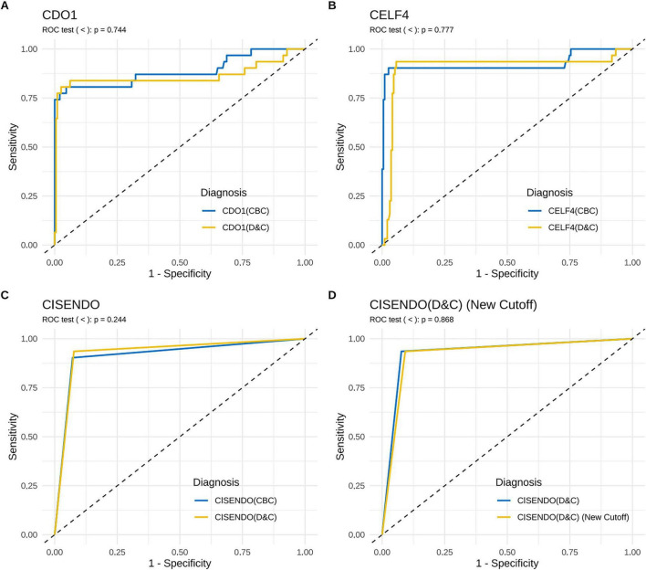

1Background & Objective
- Question: can non-invasive cervical brushing cells (CBC) match invasive D&C samples for CISENDO?
- Objective: validate CDO1/CELF4 for EIN+EC with paired CBC vs D&C specimens.
2Study Design & Cohort
31
EIN or EC
195
benign
2023.7–24.6
enrollment
- Design: prospective paired; CBC + D&C from each woman, Gansu MCH.
- Assay: CISENDO® (CDO1/CELF4 methylation, ΔCt ≤8.4/≤8.8) on both samples.
- Reference: histopathology (EIN/EC gold standard).
- Agreement: Spearman correlation + Bland-Altman; ROC comparison.
- IRB: 2023-GSFY-56 · STARD-compliant.
0.929
D&C AUC
0.916
CBC AUC
P=0.244
ROC difference ns
ΔCt ↓
EIN/EC vs benign (P<0.0001)
8.4/8.8
ΔCt cut-offs
- Inclusion: >18 y, hysteroscopy/uterine surgery indication, consent.
- Exclusion: pregnancy · hysterectomy history · incomplete data.
- Statistics: paired t-test · Spearman · Bland-Altman · ROC (DeLong).
- Reporting: STARD 2015.
ET AUC 0.499 · CA125 AUC 0.593 — methylation far superior to conventional markers; CBC vs D&C ROC ns (P=0.244).
3CBC–D&C Agreement
R 0.86
CDO1 (P=1.3e-09)
R 0.78
CELF4 (P=2.3e-07)
no bias
Bland-Altman (P=0.14/0.41)
- High concordance: CBC mirrors intrauterine samples for both genes.
- No systematic bias: paired t-test ns — sampling method interchangeable.
4ROC — CBC vs D&C

Fig. ROC — CISENDO CBC vs D&C (P=0.244); single genes ns (0.744/0.777).
0.929
D&C AUC
0.916
CBC AUC
93.5%
Se · D&C
92.3%
Sp · D&C
- Non-inferior CBC: cervical brushing matches invasive sampling accuracy.
- Versus markers: methylation ≫ ET (0.499) & CA125 (0.593).
5Why It Matters
- Barrier removal: painless CBC collection overcomes D&C discomfort & compliance issues.
- Integration: fits existing cervical cancer screening programs.
- Early detection: EIN (precancer) included — intervention before EC.
- Direction: non-invasive triage for high-risk / symptomatic women.
31
EIN/EC
226
paired samples
93.5%
Se · D&C
CISENDO on CBC: highly accurate, reliable, non-invasive — potentially transformative for EC early detection and triage of high-risk women.